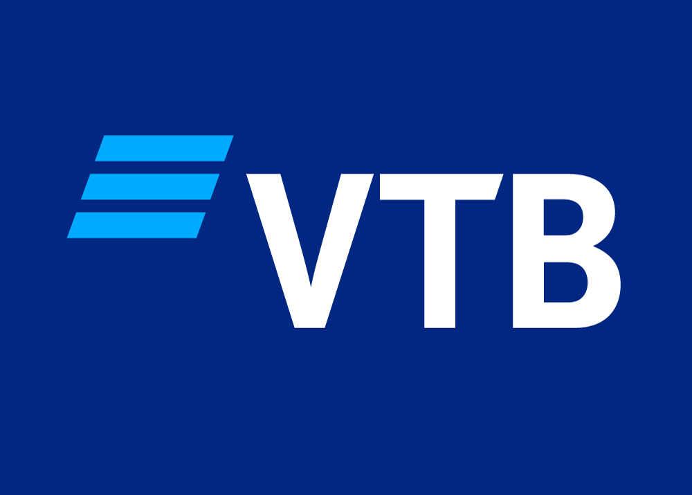
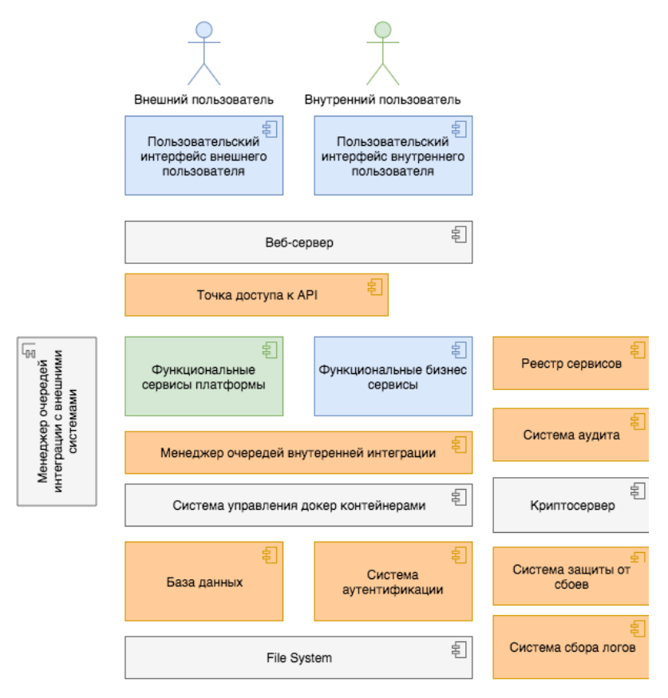
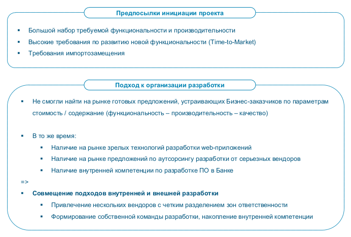
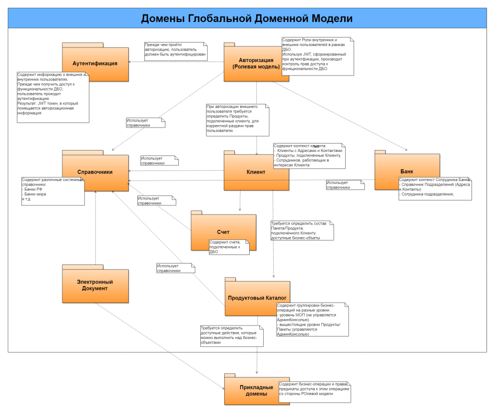

|
Система ДБО 2.0 для банка ВТБ
|
 |
Принципы построения архитектуры системы
Архитектура системы ВТБ ДБО 2.0 реализована как высокодоступная отказоустойчивая программная платформа, реализующая
принципы микросервисной архитектуры.
Принципы микросервисной архитектуры
Архитектурный стиль микросервисов — это подход, при котором единое приложение строится как набор небольших сервисов, каждый из
которых работает в собственном процессе и взаимодействует с остальными, используя легковесные механизмы, как правило HTTP. Эти
сервисы построены вокруг бизнес-потребностей и развертываются независимо с использованием полностью автоматизированной
среды. Существует абсолютный минимум централизованного управления этими сервисами. Сами по себе эти сервисы могут быть написаны на разных языках и использовать разные технологии хранения данных.
Принципы:
- организация сервисов вокруг бизнес-потребностей;
- автоматическое развертывание;
- перенос логики маршрутизации и обработки сообщений на сторону сервиса-приемника;
- децентрализованный контроль над данными;
- устойчивость к отказам и проектирование на отказ;
- толерантность к изменениям связанных сервисов.
Верхнеуровневая архитектура


При описании глобальной доменной модели (ГДМ) общая логическая модель была разделена на логические домены, исходя из определения блоков наиболее связанных объектов:
- Домен "Аутентификация" – показывает логические взаимосвязи объектов ДБО, задействованные при аутентификации пользователя (нутреннего и внешнего), чтобы понять - можно ли пользователю предоставить доступ к ДБО.
- Домен "Авторизация" – показывает логические взаимосвязи объектов ДБО, задействованные при определении прав доступа к
функциональным возможностям ДБО, определении роли пользователя и к контексту каких Клиентов/Подразделений банка пользователь может иметь доступ.
- Домен "Клиент" – определяет, какие объекты задействуются в процессе предоставления Клиенту доступов к продуктам (услугам
и сервисам) ДБО. При этом в зависимости от того, кто инициирует подключение продуктов (внешний пользователь или
сотрудник банка) есть определенные особенности.
- Домен "Счет" содержит контекст Клиентского счета и его принадлежности клиенту
- Домен "Банк" - определяет, какие объекты задействуются в процессе предоставления Сотруднику банка доступа к клиентским
документам, в зависимости от подразделения, где работает сотрудник.
- Домен "Электронный документ" – домен , определяющий объекты, задействуемые при работе пользователей с электронным
документом, системные и бизнес атрибуты, хранение истории документа, модели подписания, модель Жизненного цикла.
- Домен "Продуктовый Каталог" – определяет структуру группировки бизнес-методов, производимых над бизнес-объектами в
различного уровня продукты (сервисы и услуги), предоставляемые Банком своим Клиентам.
- Домен Справочников - домен, содержащий общие банковские справочники, задействованные в логике работы других сущностей
ГДМ
Общая структура ГДМ и взаимосвязь между ее доменами представлена на рисунке:

|